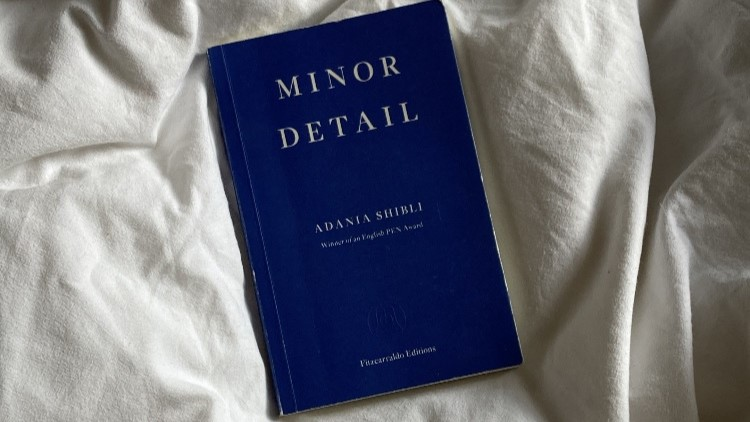

As we were having our discussion on Minor Detail the 7th of June, the author Adania Shibli was being interviewed at the Madrid Book Fair. At the end of the interview she was asked "can you still write while the genocide in Gaza continues?". She responded, "I have to write. Palestinian writers have to write. We have to write in order not to surrender to barbarism against the colonialists who see us as animals and try to animalize us.
Not just now, but since ‘48, we have to write to resist and oppose the violence of those who try to destroy our books, erase our history, and demolish our libraries and universities.
To stop writing means to stop living. This is what the colonizer wants, to paralyze us.”
